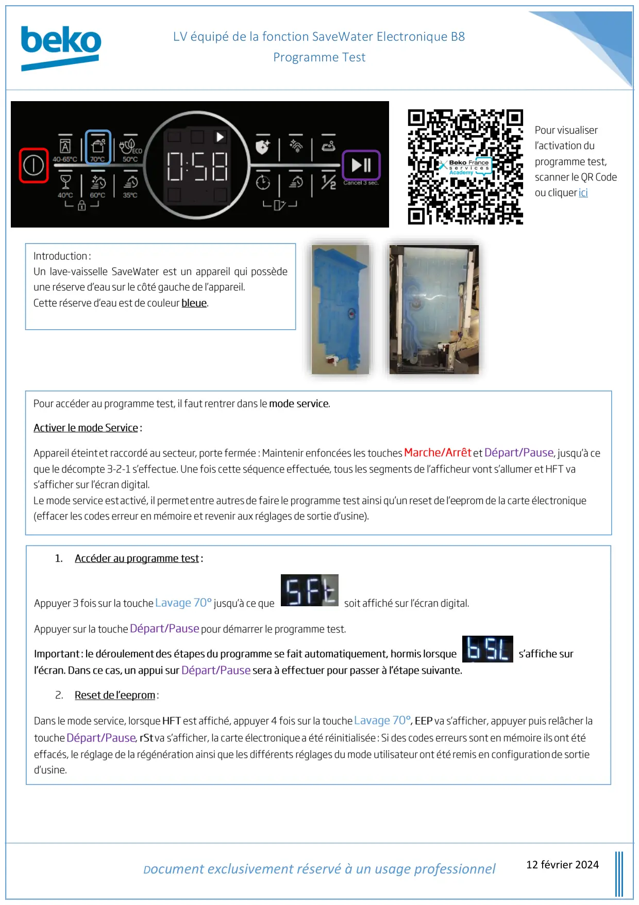
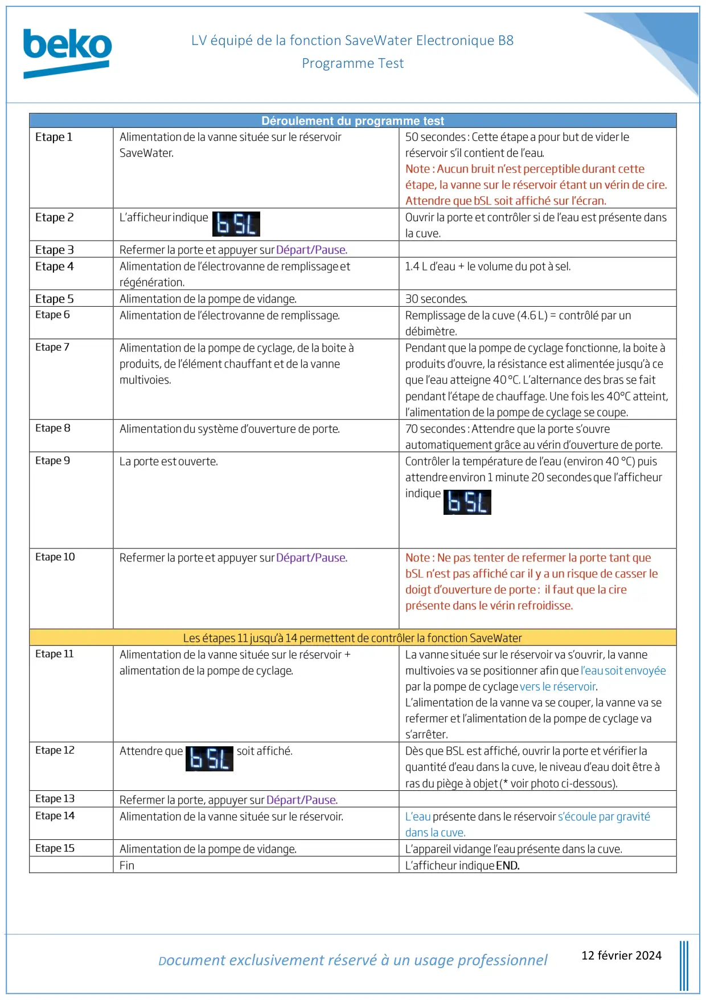
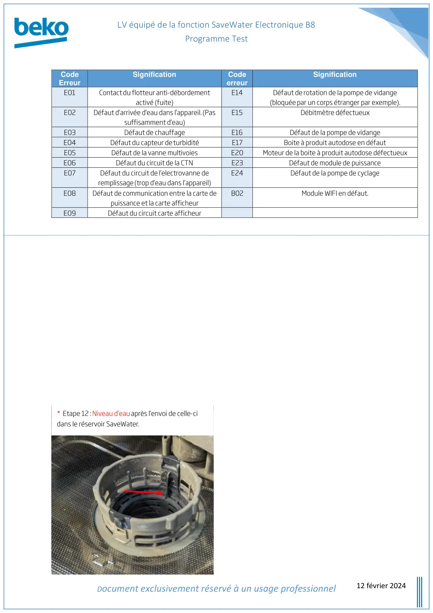

ProgTest lave vaisselle SaveWater Electronique B8

équipé de la fonction SaveWater Electronique B8Programme TestDocument exclusivement réservé à un usage professionnel12 février 2024
1 / 3
équipé de la fonction SaveWater Electronique B8Programme TestDocument exclusivement réservé à un usage professionnel12 février 2024Déroulement du programme test
2 / 3
équipé de la fonction SaveWater Electronique B8Programme TestDocument exclusivement réservé à un usage professionnel12 février 2024CodeErreurSignificationCodeerreurSignification
3 / 3